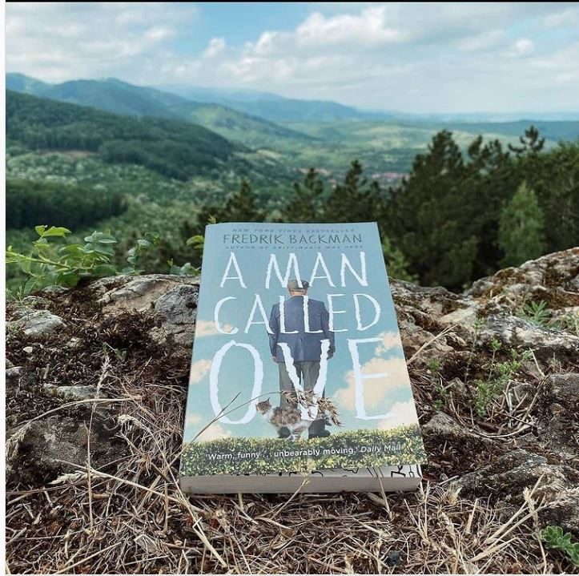
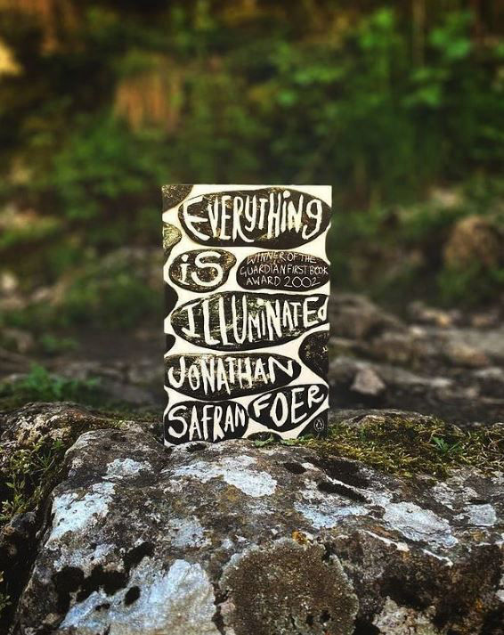
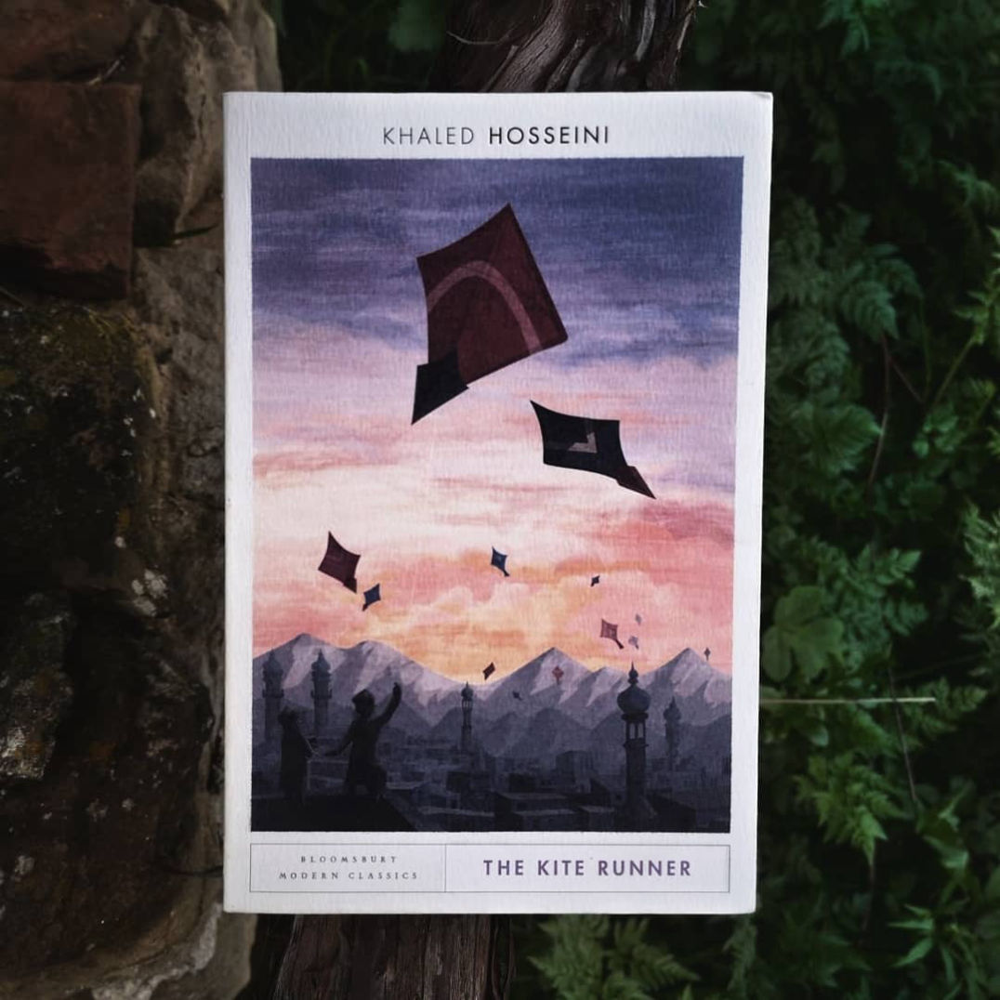
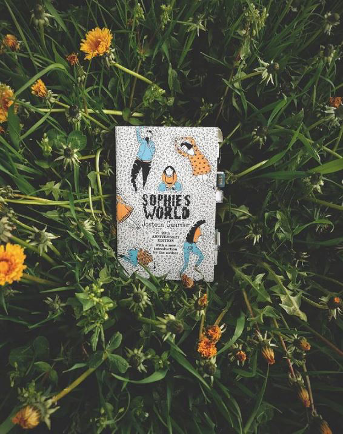

Follow books.x.cetera
Start your journey as a reader with books.x.cetera. Follow my Instagram account for more book recommendation, funny quizzes, and cool quotes that will make you want to read the books.
Hello my dears, here you can find all my book reviews!

Rating ⭐⭐⭐⭐⭐
"A man called Ove" is a peculiar novel about life and death. You will have the chance to meet Ove, a 59-year-old Swedish man, a curmudgeon, who has lost his beloved wife and his job.
Ove considers that he is surrounded by idiots unable to understand staunch principles, strict routines, and the lifetime fidelity to a car brand. Nowadays, there are only mutt-loving blond bimbos and joggers that run like they are curing “pulmonary emphysema”. People do not care anymore about the old proper ways of doing things right.
This deceptive premise is used by Backman to craft the complex character of Ove. He will take you behind the persona of a grumpy old man and he will show you all the events that stand behind today’s Ove. You will hear stories about love, friendship, family, and love.
At the heart of the matter is the grief of losing “[A]ll the color he had.” Backman will explore the way in which Ove was changed by the death of his wife. Will Ove succeed in taking his own life while those new blunt neighbors constantly interrupt him?
Just prepare yourself to be filled with joy, sorrow and a grief that will connect you to someone who doesn’t exist but who will leave an imprint, nonetheless.
Photo credit: @alexpaulm 📸 - skilled photographer and avid reader
Rating ⭐⭐⭐⭐⭐
Murakami is by far one of my favorites writers. I was used to reading his novels; however, his short narratives surpassed all my expectations. Ok, guys, are you ready? In seven short stories, Murakami will show you how men are without women.
“You are a pastel-colored Persian carpet, and loneliness is a Bordeaux wine stain that won’t come out,” – you are lonely, cold, and absent, like the moon made out of ice from the short story “Yesterday”.
You are here to see seven empty worlds. Kafuku is a widowed actor who befriends the secret lover of his dead wife. Kitaru loves to translate Beatles lyrics in Japanese, and cannot go all the way with his girlfriend. Tokai became the skeleton figure from his Holocaust book because one of his many mistresses decided to marry another guy. Habara is a single man under a strange house arrest who has mystical sex with his housekeeper, Scheherazade. Kino divorces his wife, opens a bar in the countryside, and meets the woman who will make him vanish. Gregor Samsa, in a reversed "The Metamorphosis," has no sense of self. He has a boner when seeing the hunchbacked female locksmith. In the last story, there is a nameless man who finds out, in the middle of the night, that M committed suicide.
The realism of these stories is unsettling, dark … it’s like a sad, lovelorn soufflé. You will get to see how lethal loneliness can be.

I tried to make up my mind about Everything Is Illuminated. However, everything is in chaos. I feel a constant urge to yell why, Jonathan Safran Foer, why do you do all this to me? The novel is fragmented, and when I say fragmented, I mean FRAGMENTED.
There is the story of Alex and Jonathan, the story of Trachimbrod’s people, the story of Grandfather and Herschel. Moreover, there are stories within the stories about Jonathan’s great great great great great grandmother and her 613 sadnesses. Who are all these people?
No reviews for today. I need to read the book one more time.
Rating ⭐⭐⭐⭐⭐
Today I'm going to show you a different kind of book. It's going to be "NOSTALGISK ORDBOK". You might wonder, what is so fascinating about this dictionary?
Well, it's not only a dictionary. These nostalgic words are memory triggers that bring old experiences back to life.
Petter Wilhelm Blichfeldt Schjerven, in collaboration with others, created a dictionary of the good old times. Here you can find words from 1947, words that are still used, or words that are going to be out of use.
In contrast to a normal dictionary, the words get explained with the personal touch of the author.
My curiosity is, do you have any strange, fancy, out-of-the-normal dictionary that you will like to share?

Rating ⭐⭐⭐⭐⭐
The Kite runner was the first book I read by Khaled Hosseini. I remember running my hands over the cover, over the embossed letters that read, The Kite Runner. I was anticipating a different story.
I was expecting a story about two boys who grew old together in an ever-lasting friendship. Well, Hosseini took care to shock and impress the reader. He gave his readers more than they could carry.
This story was about Amir and Hassan, two young boys who experienced two different realities. Amir, part of the Sunni ruling class, was an educated young boy who had everything he needed. However, he lacked the love of his father. Hassan, on the other hand, was part of the Shia lower class. He was the son of a prostitute and a household servant who received all the attention from Amir's father. Up to a point, these boys were best friends, and Hassan truly loved Amir and was proud to call himself his friend. But cracks started to appear when kites flew no more.
One blue kite, a dark corner in the alley, fear to confront the truth – this was the perfect recipe to bring sadness and darkness in the hearts of 4 men. What happened on that alley followed Amir for the rest of his adult days. Was there a way to repent? Was it possible to ask for the forgiveness of the one you loved the most and cowardly betrayed? Was it possible for your soul to become light as a kite again and to raise it in the sky of Kabul?
Rating ⭐⭐⭐⭐⭐
In her eighth novel, Morrison takes you to the Cosey Hotel. You've been there before- you can hear the hum, the waves, the jazz, you can smell the cinnamon, the citrus, the salty water of the sea. You can feel the driving force of love.
Soon after, the central male figure, Mr. Cosey dies. Mirrors get shattered, beds are set on fire, legs get spread open, dreams get crushed, and hearts get torn apart. Welcome, to the dark side of love.
You will follow the lives of the women touched by Cosey's love. He was a Father, a Friend, a Portrait, a Stranger, a Benefactor, a Lover, a Husband, a Guardian, and a Phantom. He was an unreachable object of desire. You will see how Heed and Christine became the worst enemies because for the love of one man. It will be difficult to read and understand Morrison, but no worries, L will whisper everything to you. She will whisper and hum about love, something that is divine and difficult at the same time.
Rating ⭐⭐⭐⭐⭐
A Thousand Splendid Suns follows the life of Mariam, a harami girl, in a world governed by war and men. Early on in life, she gets to discover that “a man’s accusing finger always finds a woman”.
This is a story about the lifelong journey of two girls, Mariam and Laila from two contrasting social backgrounds. It is a novel about true love, faith, and friendships. Mariam grows up marginalized in a brutal world where the conditions of her birth make her a harami. As a child, she had lived with a false image of her father, and with a mother ruled by a jinni. After years of living in a violent, arranged marriage, she meets Laila, who will change her entire life. Will Mariam find peace? Will she ever be loved? Will she ever escape from the Talibans’ ruling fist?
Hosseini's novel gave me the impression of looking through a peephole and seeing a world in which one’s access should have been forbidden.

Rating ⭐⭐⭐⭐⭐
Gaarder's novel, Sophie’s World, was an enjoyable experience from many points of view.
Of the many reason why that is, I would like to begin with how this novel was built as a vessel for introducing the reader to the basics of philosophy. For me, the lessons Sophie received in her mysterious letters from the unknown Albert were a nice recap of all the philosophical concepts discussed by Sartre, Descartes, Spinoza, and so on, and let’s not forget that there was also a very nice chapter on Freud that was diluted for the sake of Sophie’s understanding. This chapter spoke about a boy who dreamt about balloons.
The magic and the mystery were also nicely interweaved with the plot.
Some strange letters are exchanged between the two, making them question whether their existence is indeed a reality or whether they are living in someone else’s story. Clues to this are spread throughout the book.
Would I recommend this book? Definitely.
It’s a must, especially if you enjoy philosophical writing.
Rating ⭐⭐⭐⭐⭐
What more can one say about HERE I AM? There are so many reasons why I love Foer’s novel. First of all, this book is an unceasing hymn of complacency, and a wild celebration of small joyful moments
Lately, I started to look more behind Hineni (HERE I AM). The voice of God speaks slowly to us, but we are too busy, we have so many things to do, and we ignore Him. We refuse to hear when we are asked "Ayyekkah?" (Where are you). Silence is a comfortable excuse, and thus God’s question remains a frozen echo through our lives. I’m just in love with how Foer took this idea and examined how we answer it in our times. How present are we? How present is Jacob Bloch in his life? Does he observe when his marriage is on a pile of gunpowder ready to explode? That's just the second reason why I recommend this book.
The third one? Well… the taste of loss, a sensation that is so strong that I cannot describe, but YOU will feel it while reading the end of the story.
Mobirise site creator - More info